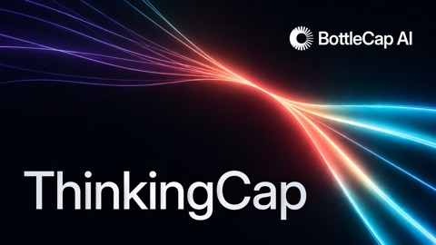
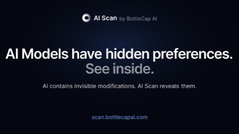

Selected experience
- 2025–present Co-Founder, BottleCap AI. Founded with Tomas Mikolov and Jaroslav Beck. We raised a $7.5M seed round led by 20VC and are building efficiency-first language models.
- 2025 Visiting researcher, National University of Singapore. Worked with Prof. Michael Shieh on Thinking Tokens for LLM reasoning.
- 2024–present Co-Founder, Hive Spirit Technologies. Built language-model-driven algorithmic trading systems with Tomas Mikolov for stock markets.
- 2022–2025 PhD research, CTU/CIIRC. Research on language models under Tomas Mikolov. First-author papers at ICLR, ECAI and ALIFE.
- 2022–2023 Amazon Alexa Prize finalist, Alquist AI. Built open-domain conversational AI for the Socialbot Grand Challenge 5; the team reached the finals and placed 3rd.
Talks, interviews & press
 Can Europe Win the AI Race?
Long-form conversation on efficient AI, model collapse, model bias, and Europe’s role in frontier AI.
Can Europe Win the AI Race?
Long-form conversation on efficient AI, model collapse, model bias, and Europe’s role in frontier AI.
 BottleCap AI launch
Coverage of BottleCap AI’s $7.5M seed round and mission to build more efficient language models.
BottleCap AI launch
Coverage of BottleCap AI’s $7.5M seed round and mission to build more efficient language models.
 GoodMeetup #8: The Full Stack of AI
Panel on the modern AI stack with BottleCap AI, Qdrant, Macaly, and GoodData.
GoodMeetup #8: The Full Stack of AI
Panel on the modern AI stack with BottleCap AI, Qdrant, Macaly, and GoodData.
 Language models and artificial intelligence
Talk on language models, intelligence, and the trajectory of AI systems.
Language models and artificial intelligence
Talk on language models, intelligence, and the trajectory of AI systems.
 AI researcher David Herel
Interview on language models, research, and how AI is changing software and work.
AI researcher David Herel
Interview on language models, research, and how AI is changing software and work.
 Artificial intelligence is already everyday technology
Expert commentary on how language models are entering everyday technology.
Artificial intelligence is already everyday technology
Expert commentary on how language models are entering everyday technology.
Notable Publications & Releases

ThinkingCap-Qwen3.6-27B
Open-weights model series, July 2026. Apache 2.0.
Qwen3.6-27B with 2× fewer thinking tokens on average and up to 10× faster generation on individual examples, at the same accuracy. Half a million downloads on Hugging Face in its first day; over a million to date across official and community builds.
